视频教程
1 下载
- 下载链接 百度网盘 提取码：
zdem - 解压，得到如下图所示文件。 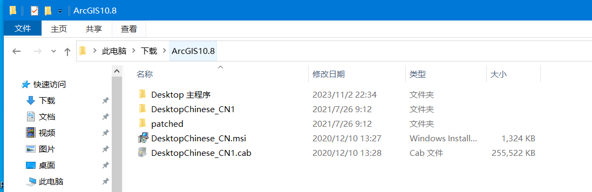
- 目录结构如下
- Desktop 主程序 # ArcGIS安装程序 Setup.exe 所在目录
- DesktopChinese CN1
- patched
- DesktopChinese CN.msi # 汉化程序
- DesktopChinese CN1.cab
2 安装
- 双击安装程序
.\Desktop 主程序\Setup.exe, 约15分钟后，完成安装ArcGIS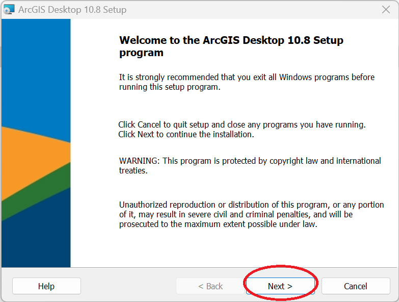 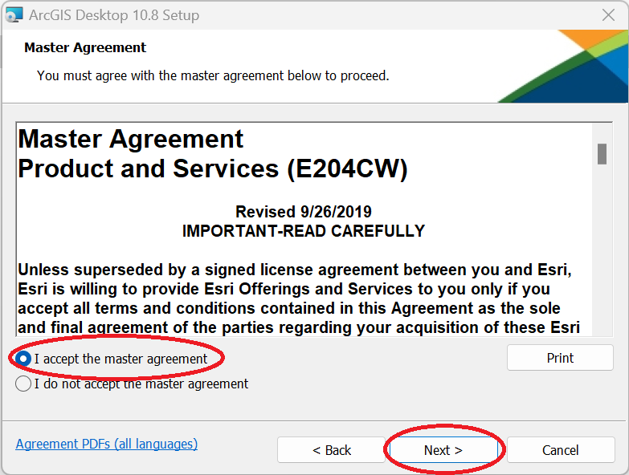 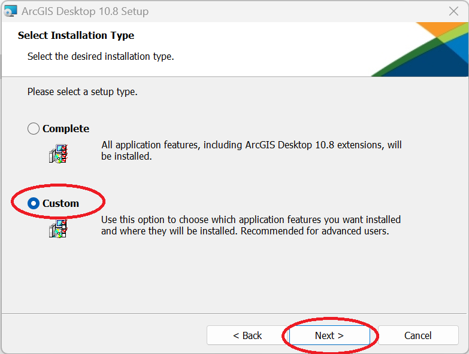 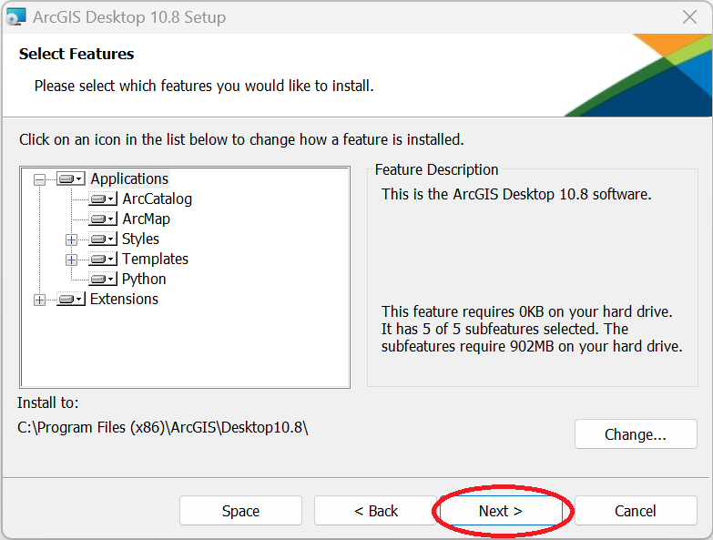 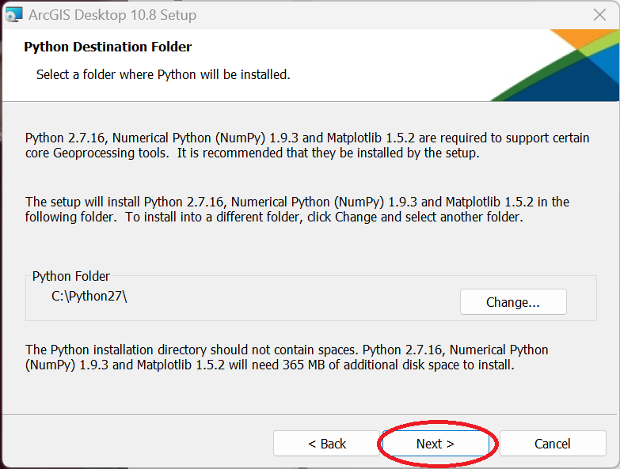 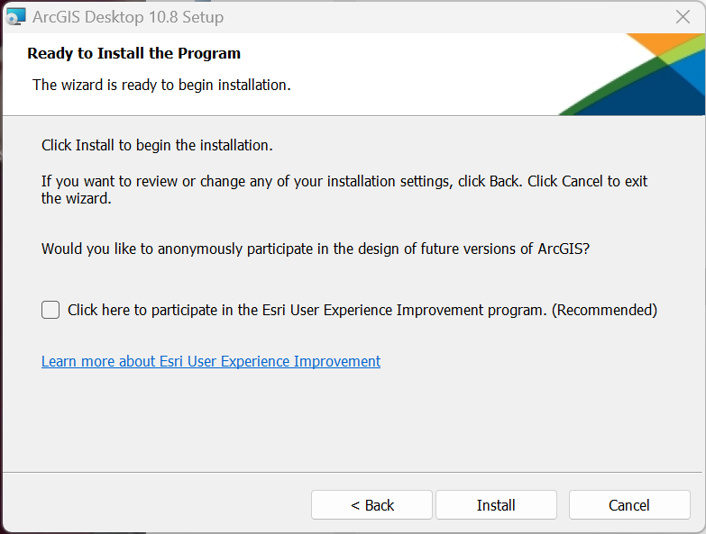 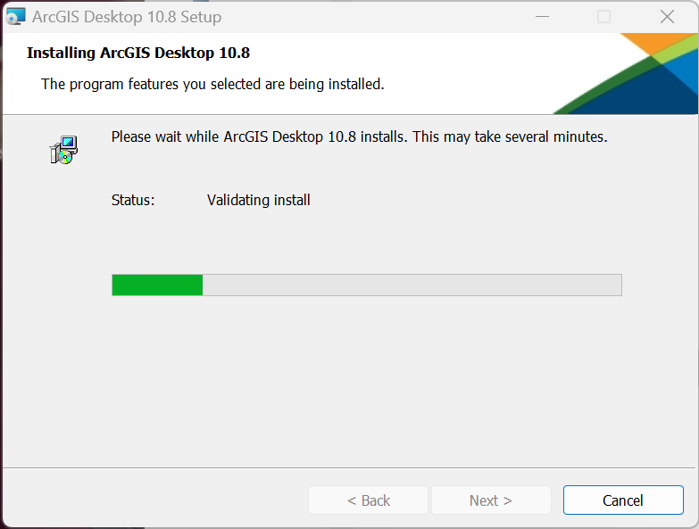 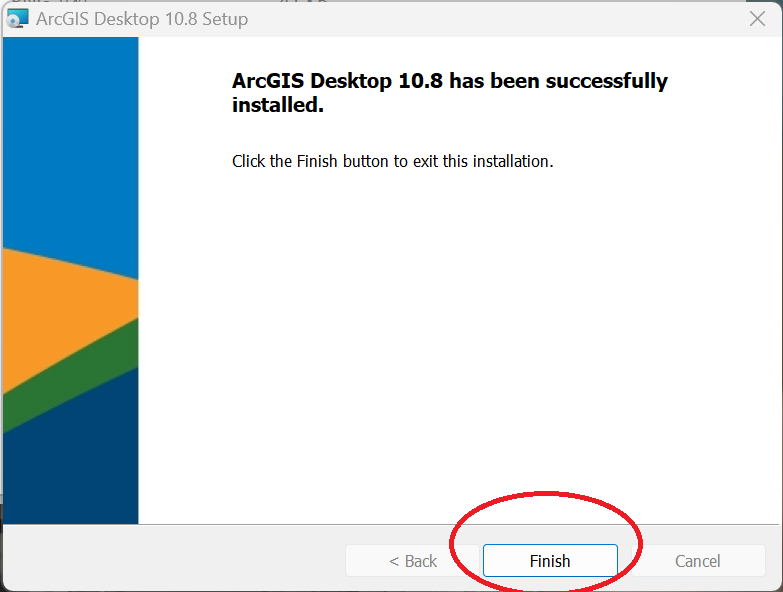 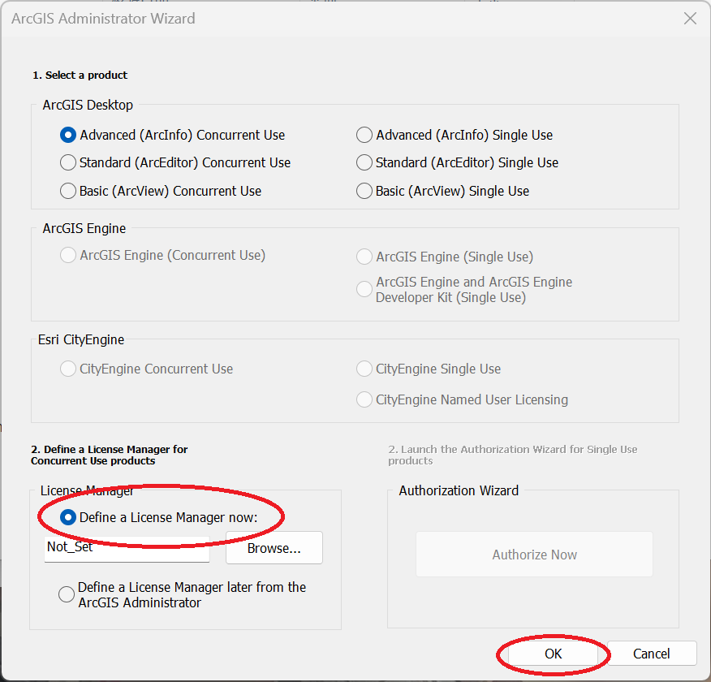 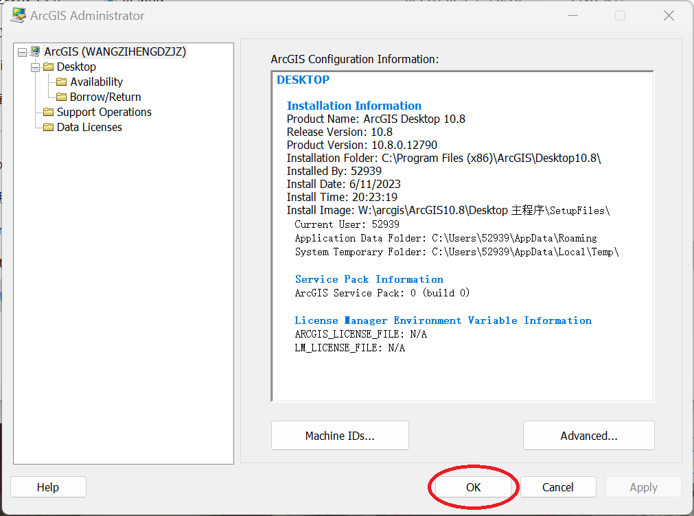
3 破解
- 将
.\patched\AfCore.dll复制到安装目录C:\Program Files (x86)\ArcGIS\Desktop10.8\bin，替换掉原来的AfCore.dll。 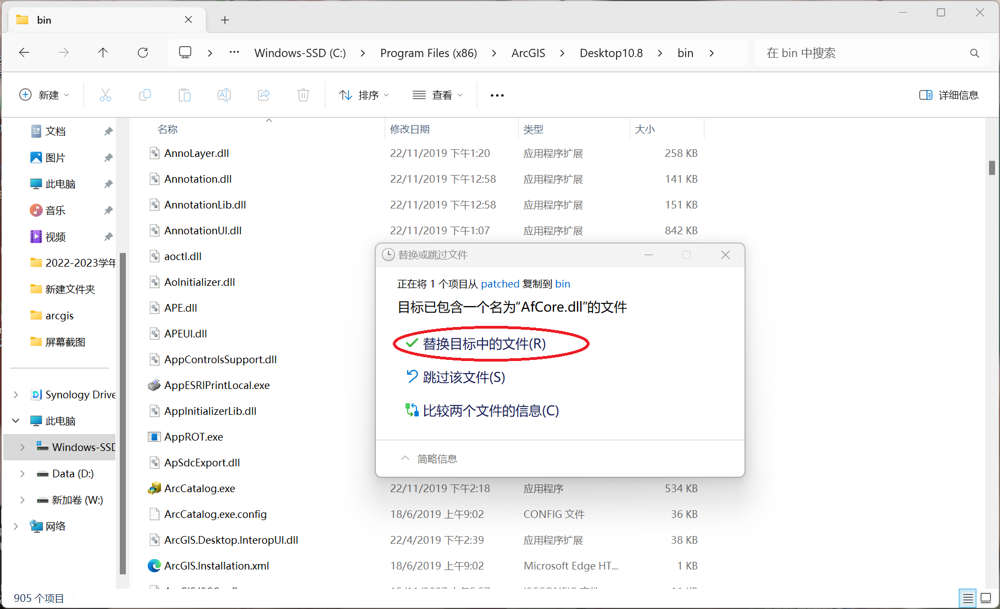
4 汉化
- 双击
.\DesktopChinese_CN.msi,等待安装完成即可。
5 运行
- windows开始菜单找到
ArcMap 10.8，单击即可打开。 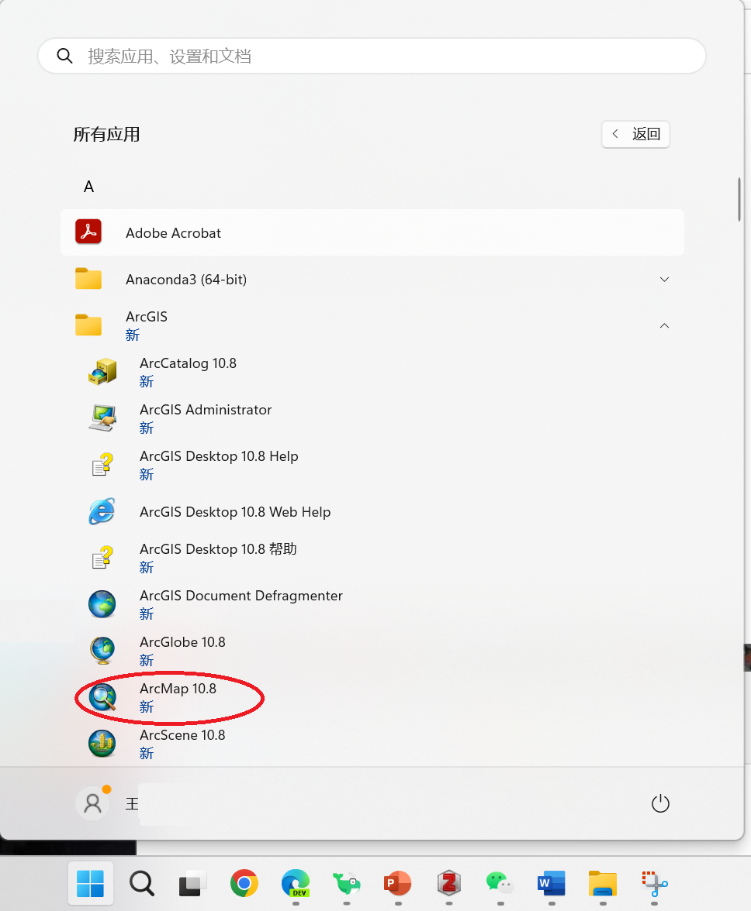
致谢： 王子恒（ArcGIS）